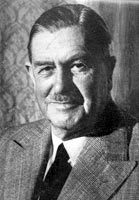
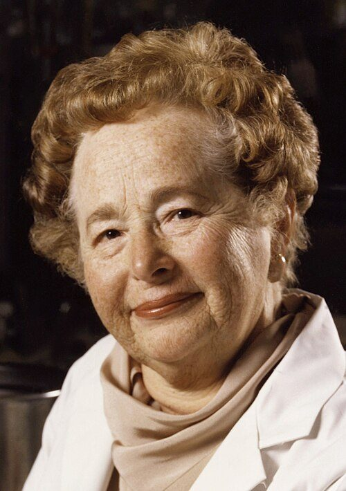
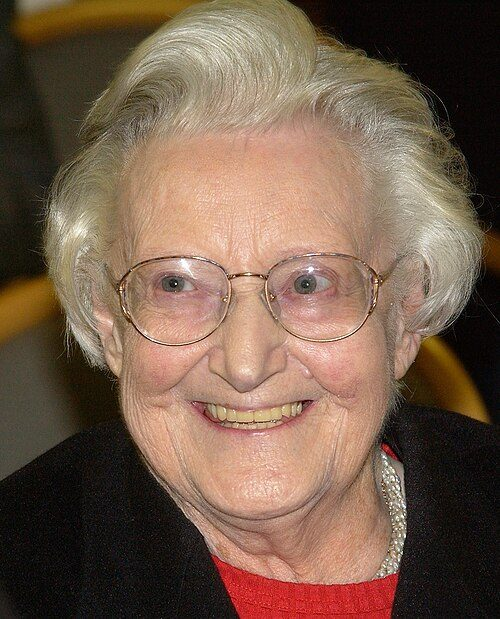
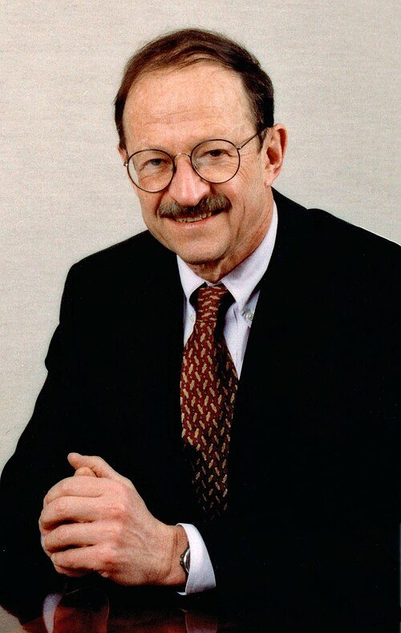
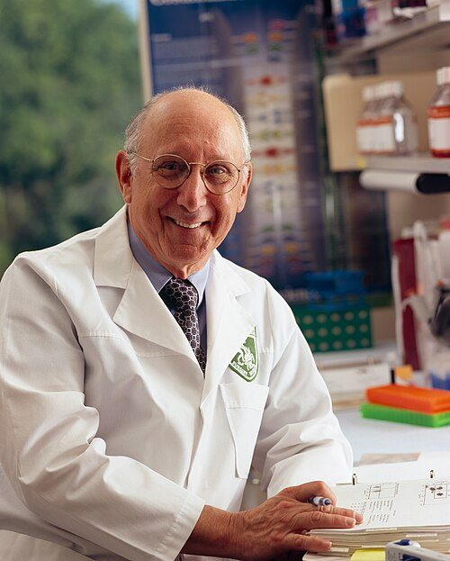
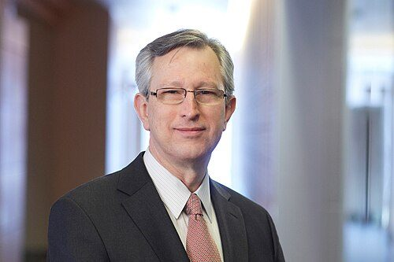
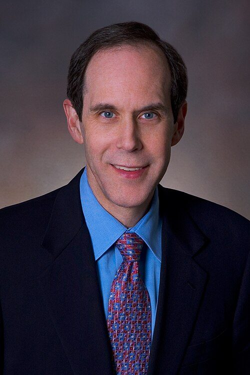

Las personas detrás de la oncología
Médicos, científicos y pacientes que cambiaron la historia del cáncer, de Percivall Pott a la inmunoterapia.
 011714-1788
011714-1788Percivall Pott
El cirujano londinense que en 1775 describió el cáncer de los deshollinadores y demostró, por primera vez, que un cáncer podía tener una causa ambiental evitable.
Leer → 021821-1902
021821-1902Rudolf Virchow
El médico alemán que demostró que el cáncer está hecho de células que vienen de otras células y fundó la patología celular, la base del diagnóstico moderno.
Leer → 031845-1923
031845-1923Wilhelm Röntgen
El físico alemán que descubrió los rayos X en 1895. En pocos meses se usaron para ver el interior del cuerpo y, poco después, para tratar tumores.
Leer → 041852-1922
041852-1922William Halsted
El cirujano estadounidense que creó la mastectomía radical y la escuela moderna de cirugía. Su operación dominó el tratamiento del cáncer de mama durante 80 años.
Leer → 051862-1936
051862-1936William Coley
El cirujano de Nueva York que a finales del siglo XIX trató sarcomas con bacterias inyectadas. Hoy se le considera el abuelo de la inmunoterapia.
Leer →061862-1915Theodor Boveri
El biólogo alemán que en 1914 propuso que el cáncer nace de células con cromosomas alterados. Una idea adelantada medio siglo a su tiempo.
Leer → 071867-1934
071867-1934Marie Curie
La física y química polaca que descubrió el polonio y el radio, ganó dos premios Nobel e impulsó el uso de la radiactividad para tratar el cáncer.
Leer →081879-1970Peyton Rous
El patólogo estadounidense que en 1911 demostró que un virus podía causar cáncer en las gallinas. Recibió el Nobel 55 años después.
Leer → 091883-1962
091883-1962George Papanicolaou
El médico griego que inventó la citología que lleva su nombre, la primera prueba de cribado de cáncer de uso masivo, que ha evitado millones de muertes por cáncer de cuello uterino.
Leer → 101900-1994
101900-1994Mary Lasker
La activista estadounidense que convirtió la investigación del cáncer en una prioridad política y fue clave en la Ley Nacional del Cáncer de 1971.
Leer →
111901-1997Charles Huggins
El urólogo canadiense que demostró en 1941 que el cáncer de próstata depende de las hormonas masculinas. Abrió la puerta a la hormonoterapia.
Leer → 121903-1973
121903-1973Sidney Farber
El patólogo de Boston que consiguió en 1948 las primeras remisiones de leucemia infantil con un fármaco y es considerado el padre de la quimioterapia moderna.
Leer →131912-2005Richard Doll
El epidemiólogo británico que, con Austin Bradford Hill, demostró que fumar causa cáncer de pulmón. Su estudio de médicos británicos duró 50 años.
Leer →
141918-1999Gertrude Elion
La química estadounidense que diseñó fármacos de forma racional, entre ellos la 6-mercaptopurina para la leucemia infantil. Premio Nobel sin título de doctora.
Leer →
151918-2005Cicely Saunders
La enfermera, trabajadora social y médica británica que fundó el movimiento moderno de los cuidados paliativos y el concepto de «dolor total».
Leer → 161918-2019
161918-2019Bernard Fisher
El cirujano que, con ensayos clínicos rigurosos, demostró que el cáncer de mama no necesitaba mutilaciones para curarse y cambió la manera de entender la enfermedad.
Leer → 171919-2013
171919-2013Jane Cooke Wright
La oncóloga afroamericana que convirtió la quimioterapia en una ciencia, probando fármacos en cultivos del tumor de cada paciente. Cofundadora de la ASCO.
Leer → 181920-1951
181920-1951Henrietta Lacks
La paciente afroamericana cuyas células de cáncer de cuello uterino, las células HeLa, fueron las primeras humanas en vivir indefinidamente en el laboratorio. Se tomaron sin su consentimiento.
Leer → 191925-2013
191925-2013Janet Rowley
La genetista estadounidense que en 1973 descubrió que el cromosoma Filadelfia nace de un intercambio entre dos cromosomas. Demostró que el cáncer es una enfermedad genética.
Leer →201933-2008Judah Folkman
El cirujano que en 1971 propuso que los tumores necesitan formar vasos sanguíneos para crecer, una idea que abrió el camino a los fármacos antiangiogénicos.
Leer → 211936-2023
211936-2023Harald zur Hausen
El virólogo alemán que demostró que el virus del papiloma humano causa el cáncer de cuello uterino. Su hallazgo hizo posible una vacuna contra el cáncer.
Leer →
22Varmus (1939); Bishop (1936)Harold Varmus y Michael Bishop
Los científicos estadounidenses que descubrieron en 1976 que los oncogenes son genes normales de nuestras células que se han alterado.
Leer →
231940Steven Rosenberg
El cirujano del Instituto Nacional del Cáncer de Estados Unidos que demostró que el sistema inmunitario puede eliminar tumores avanzados. Pionero de la terapia celular.
Leer →241946Mary-Claire King
La genetista estadounidense que demostró en 1990 que existe un gen del cáncer de mama hereditario en el cromosoma 17: BRCA1.
Leer → 25Allison, n. 1948 · Honjo, n. 1942
25Allison, n. 1948 · Honjo, n. 1942James Allison y Tasuku Honjo
Los dos inmunólogos que descubrieron cómo quitar los frenos del sistema inmunitario para atacar el cáncer, y recibieron el Nobel de Medicina de 2018.
Leer →261948Dennis Slamon
El oncólogo estadounidense que relacionó el gen HER2 con el cáncer de mama agresivo y llevó a la clínica el trastuzumab, uno de los primeros tratamientos dirigidos.
Leer → 27Nacido en 1949
27Nacido en 1949Mariano Barbacid
El bioquímico madrileño cuyo equipo identificó en 1982 la mutación que activa el primer oncogén humano, RAS, y que dirigió el Centro Nacional de Investigaciones Oncológicas.
Leer → 281953
281953Carl June
El inmunólogo estadounidense que llevó a la clínica las células CAR-T, linfocitos del paciente modificados para atacar su cáncer. Su primera paciente infantil, Emily Whitehead, sigue en remisión.
Leer →
291953Joan Massagué
El científico barcelonés del Memorial Sloan Kettering que ha descubierto cómo las células del cáncer se diseminan y sobreviven en otros órganos: la biología de la metástasis.
Leer →
30Nacido en 1955Brian Druker
El oncólogo que llevó el imatinib a los pacientes con leucemia mieloide crónica y convirtió una enfermedad mortal en una enfermedad crónica controlable con una pastilla.
Leer →